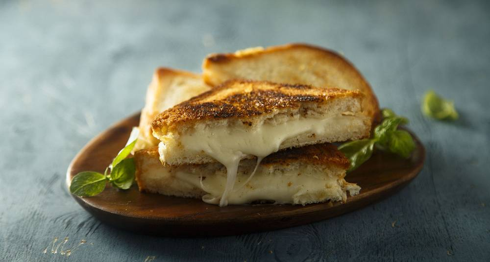

Toast

Description
Toast is one of the most common dishes to make at home, because it's easy to make and it's
quite delicious. You only need to slice some bread, add some cheese and topping and
then finally throw them into a microwave and viola.
Ingredients
- Fine bread
- Gauda cheese
- Tomato ketchup
Steps
- Slice two pieces of bread and set them on a plate
- Lay three to four slices of the cheese on each bread slice
- Add some ketchup on top of the cheese
- Put it in the microwave for 30 to 60 seconds
- Let it rest for one minute before eating